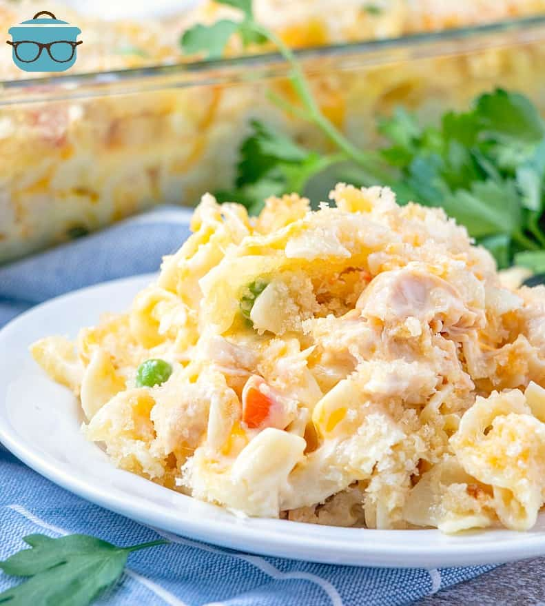

Chicken Noodle Casserole

An easy family favorite dinner perfect for the winter months, try this Chicken Noodle Casserole from The Country Cook!
Ingredients
- 2 (12.5 ounce) cans chunk chicken breast, drained (or about 3 cups of store-bought rotisserie chicken, diced)
- 2 (10.5 ounce) cans cream of chicken soup
- 1 cup mayonnaise
- 1 cup milk
- 1/2 onion, finely diced (optional) (you could also use about 1 Tablespoon of dried onion flakes - see notes below)
- 2 cups shredded cheddar cheese
- 1 1/2 cups frozen peas and carrots
- 12 ounce package egg noodles, cooked and drained
- 1 cup panko bread crumbs
- 1 stick salted butter (1/2 cup), melted
Instructions
- Preheat over to 350°F. Spray 9x13-inch baking dish with non-stick cooking spray.
- In a large bowl, combine 2 (12.5 ounce) cans chunk chicken breast, drained, 2 (10.5 ounce) cans cream of chicken soup,
1 cup mayonnaise, 1 cup milk, 1/2 onion, finely diced (optional), 2 cups shredded cheddar cheese and 1 1/2 cups frozen
peas and carrots.
- Stir until combined. Gently stir in 12 ounce package egg noodles, cooked and drained.
- Pour mixture into prepared baking dish. Sprinkle top evenly with 1 cup panko bread crumbs.
- Pour 1 stick salted butter (1/2 cup), melted evenly over top of bread crumbs.
- Bake uncovered for about 30-35 minutes until bubbly and top is golden brown.
- Dig in and enjoy!
Nutrition
Makes 6 servings. Each serving contains approximately:
- Calories: 745kcal
- Carbohydrates: 29g
- Protein: 40g
- Fat: 51g
- Sodium: 1050mg
- Fiber: 2g
- Sugar: 4g
To see the original recipe click here.
Home